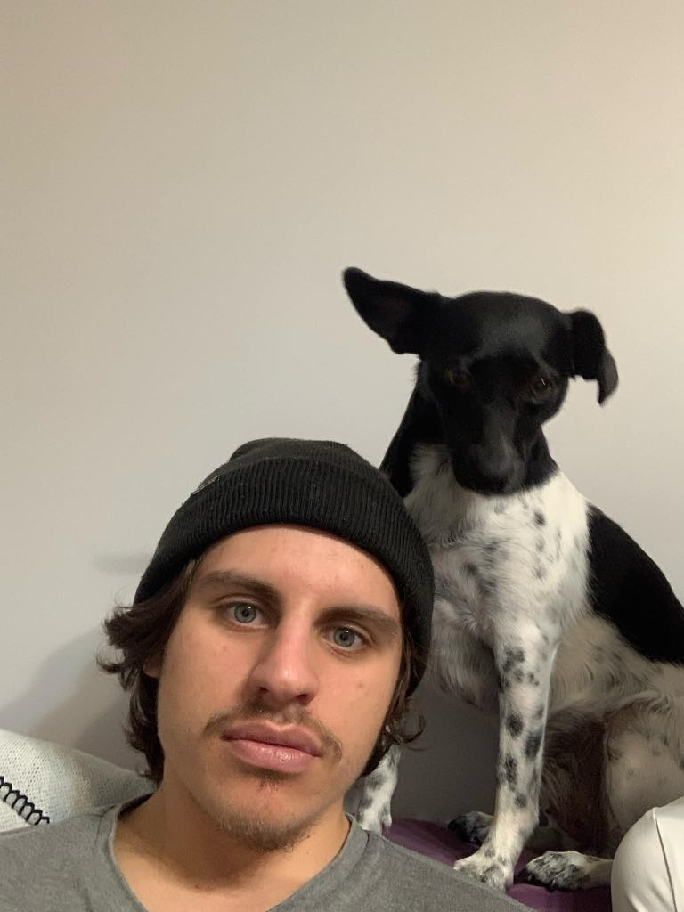

Welcome
What's about me
My Projects
Podstawowe informacje
Mam 21 lat
Pochodzę z borów tucholskich
Fan Star Wars oraz lojalny kibic zespołu Williamsa F1
Studiuję elektronikę i telekomunikację na PG
Moją specialnością są sieci teleinformacyjne
Lubię rozwiązywać problemy, potrzebna mi tylko wiara
Lubię dostać oraz obdarować drugą osobę dobrym memem
Trochę głębiej
W czasach licealnych (tak, skończyłem liecum ogólnokształcące), zainteresowałem się programowaniem. Oglądając różne tutoriale/kursy zdobyłem jakąś podstawową wiedzę (albo jakiś jej ułamek)(był to Python i Java).Z tego względu iż od dziecka miałem dobre stopnie z matematyki czy fizyki oraz interesowałem się tym jak działa cały świat elektrotechniczy, zdecydowałem że odpowiednim kierunkiem dla mnie będzie Politechnika Gdańska, gdzie chciałem studiować informatykę, jednak końcowo wybrałem EiT, ponieważ chciałem posiąść jak najwięcej wiedzy o tym jak wszystko na tym świecie wspólnie się komunikuję/działa razem a po godzinach pracy hobbystycznie programować. Intryguje oraz fascynuje mnie to co może przynieść kolejny dzień, wydaje się że lada chwila nastąpi przełom w świecie technologii. Chciałbym dołożyć swoją cegiełkę w tym procesie i swoją pracą przyczynić się że coś na tym świecie będzie działać lepiej, szybciej i efektywniej
Trochę luźniej
A tak poza tym lubię pograć w kosza, w piłkę nożną, interesuję się muzyką. Po zakończeniu trybu fabularnego Red Dead Redemption 2 życie nie smakuje już tak samo, lubię czytać książki o inspirujących osobach np. Richard Feynman. Wydaje mi się że jestem lubiany i szybko łapie się ze mną kontakt, chcę jak najszybciej nauczyć się tego co mi potrzebne do wykonania danego zadania.